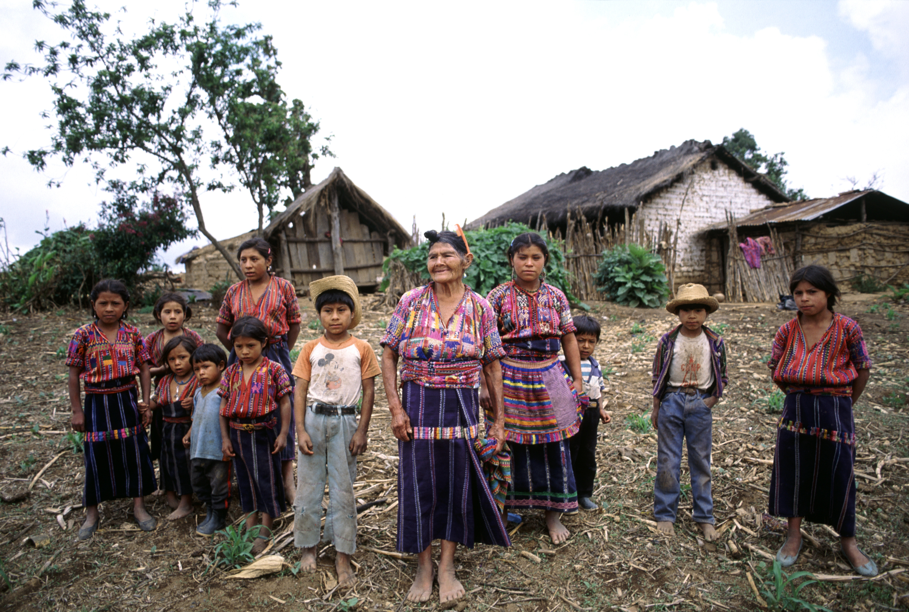

I. Introduction
Indigenous communities are disproportionately impacted by climate change due to their close connection to natural environments. Changes in weather patterns, increased frequency of extreme events like storms and floods, and shifts in traditional food sources affect their livelihoods and cultural practices. 
II. Traditional Knowledge in Climate Adaptation
Collaborating with Indigenous communities to integrate traditional knowledge into climate adaptation strategies is essential. Their deep understanding of local ecosystems, weather forecasting methods, and sustainable resource management practices can inform resilient strategies for mitigating climate risks.
III. Sustainable Resource Management
Working with Indigenous communities on sustainable resource management practices such as forest stewardship, water conservation, and soil preservation not only enhances ecosystem health but also builds resilience against climate-induced challenges like deforestation, water scarcity, and land degradation.

IV. Indigenous Health and Well-being
Climate change impacts on Indigenous health, including shifts in disease patterns, food insecurity, and displacement due to environmental changes, highlight the need for holistic approaches to public health, incorporating traditional healing methods, and community-based adaptation strategies.
V. Cultural Heritage Preservation
Preserving Indigenous cultural heritage is crucial amid climate change. Initiatives focusing on language revitalization, traditional knowledge transmission, and cultural practices not only uphold identity but also strengthen community resilience by fostering social cohesion and collective adaptation efforts.
VI. Climate Advocacy and Policy Influence
Empowering Indigenous voices in climate advocacy and policy-making processes ensures that climate policies are inclusive, equitable, and respect Indigenous rights and sovereignty. Indigenous-led initiatives can drive sustainable development agendas, promote land rights, and advocate for climate justice.
VII. Renewable Energy and Green Technologies
Exploring renewable energy solutions and green technologies in partnership with Indigenous communities supports sustainable development goals, reduces greenhouse gas emissions, and creates opportunities for economic empowerment and energy sovereignty.
VIII. Conclusion: Building Climate Resilience Together
By recognizing and respecting Indigenous knowledge, promoting collaboration, and supporting Indigenous-led initiatives, we can build resilient communities that thrive amidst climate challenges. Embracing cultural diversity, fostering sustainable practices, and advocating for climate justice are key steps towards a more resilient and equitable future for all.